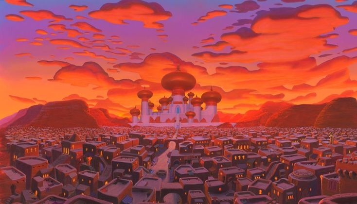
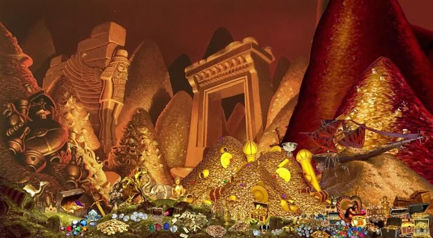

Dunia Aladdin: Kota, Istana, dan Keajaiban
Cerita Aladdin berlatar di Agrabah, sebuah kota kuno penuh warna dan kehidupan. Di pasar yang ramai, pedagang menjajakan kain, rempah, dan barang eksotis dengan aroma yang menggoda. Di atas bukit berdiri megah istana Sultan dan Putri Jasmine, simbol kemewahan dan kekuasaan.
Di luar kota, gurun luas terbentang penuh misteri dan bahaya. Di salah satu sudut gurun, tersembunyi gua rahasia yang menyimpan lampu ajaib dengan jin yang siap mengabulkan permintaan. Nuansa antara kehidupan rakyat biasa dan kemewahan istana membuat dunia Aladdin penuh petualangan dan keajaiban.
Penasaran dengan kisah seru dan petualangan Aladdin selanjutnya? Yuk lanjut ke halaman berikutnya!